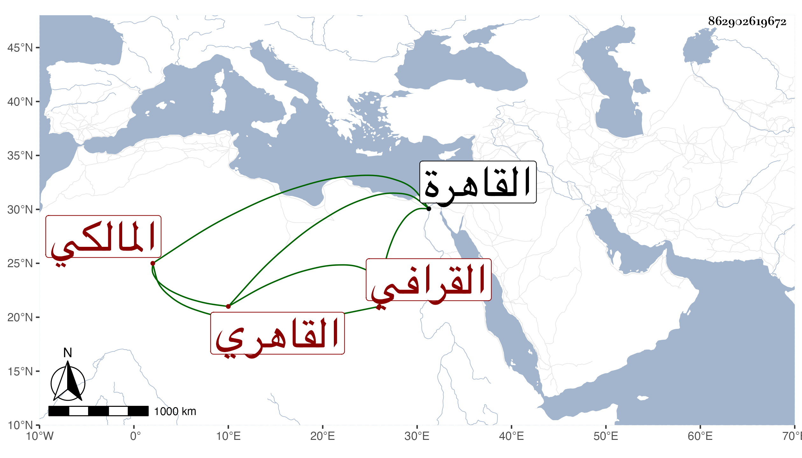

0902Sakhawi.DawLamic.ITO20230111-ara1.EIS1600.862902619672
Biography ID: 862902619672
80
محمد بن محمد بن أحمد بن عمر بن شرف البدر أبو الاشراق بن الشمس القرافي الأصل القاهري المالكي الماضي أبوه . ولد في شوال سنة ست وثلاثين وثمانمائة بالقاهرة ونشأ في كنف أبويه فحفظ القرآن واحتفل أبوه بصلاته عقب ختمه وكذا حفظ غيره ، واشتغل عند أبيه قليلا ، وسمع على شيخنا والرشيدي وطائفة واستقر في جهات أبيه بعده بل خلفه في قراءة منتقى ابن أبي جمرة من البخاري عند ضريحه استهلال كل سنة ، وحج غيره مرة وجاور وناب في القضاء وأهين من الأشراف فايتباي وقتا ورسم عليه أخري بسبب شكوى امرأة وتكلف لما باع شيئا من موجوده واستدان بسببه هذا عقب ختانه لولده وتكلفه في المهم الذي بالغ في شأنه لارضاء أمه ابنة سعد الدين الكماخي المذكورة بعدم التوفيق بل أخذ السارق عمامته وضربه بحيث كاد أن يعدم . وبالجملة فليس أيضا بمحمود السيرة مع لين كلامه وتميزه في صناعة الشروط .
